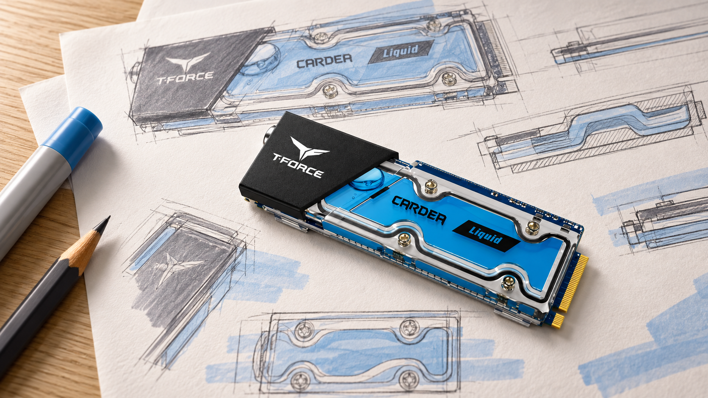
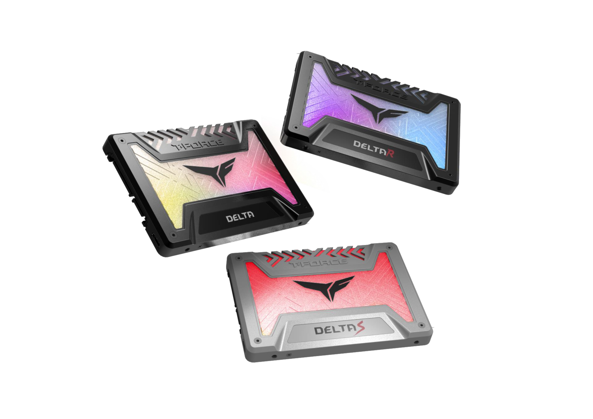
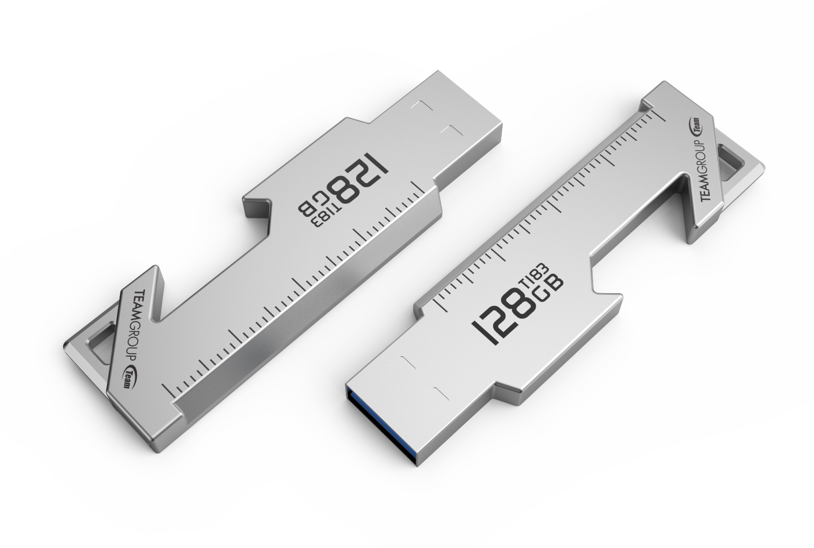
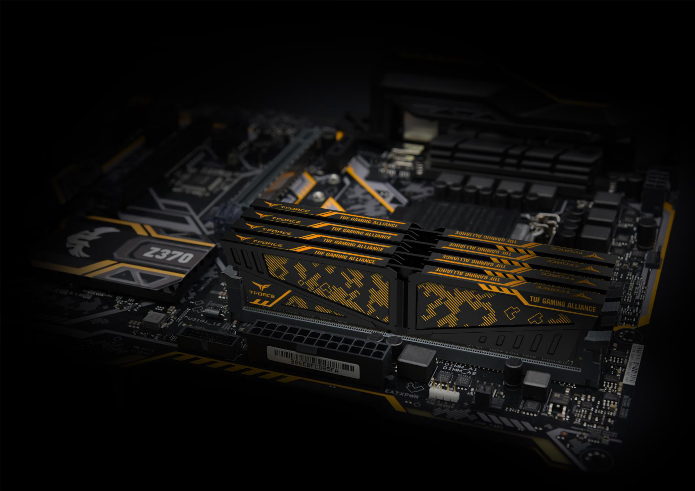
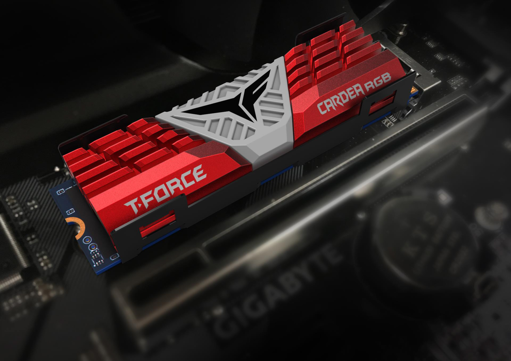
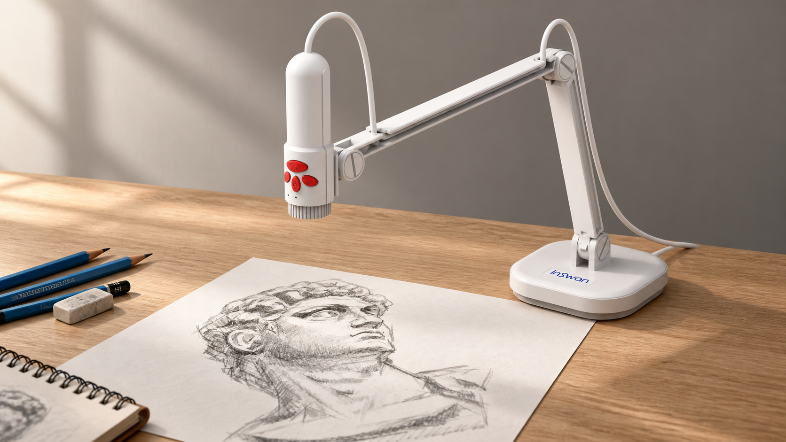

01
Networking / Gateway

Portfolio / ID
一件產品的樣子，來自造型，也來自看不見的取捨。這裡收錄在產品研究、CMF、工程溝通與量產協作中的實踐，從整體輪廓，慢慢看到細節。
View ProjectsSelected Projects / 01—10
Networking / Gateway
Industrial Design
Industrial Design
Industrial Design
Networking / Gateway
Design under production constraints
在 TeamGroup，參賽作品從一開始就要面對量產成本。每一個造型選擇，都牽動製程、供應鏈、可靠度與上市時程。DELTA RGB SSD、CARDEA LIQUID 與 T183 TOOL USB，便是在這些實際條件中逐步成形，並獲得獎項肯定。

Gaming / Storage

Storage / USB

Gaming / Memory

Concept / Design Exploration

Document Camera